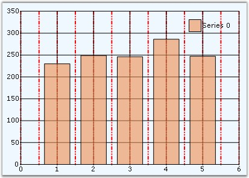

Chart comes with minor lines support which will draw lines along the intervals provided. The appearance of these line is also customizable similar to the major grid lines.
|
[C#]
this.chartControl1.PrimaryXAxis.DrawMinorGrid = true; this.chartControl1.PrimaryXAxis.MinorGridLineType.DashStyle = DashStyle.DashDotDot; this.chartControl1.PrimaryXAxis.MinorGridLineType.Width = 2; this.chartControl1.PrimaryXAxis.MinorGridLineType.ForeColor = Color.Red; chartControl1.PrimaryXAxis.SmallTicksPerInterval = 1; |
|
[VB.NET]
Me.chartControl1.PrimaryXAxis.DrawMinorGrid = True Me.chartControl1.PrimaryXAxis.MinorGridLineType.DashStyle = DashStyle.DashDotDot Me.chartControl1.PrimaryXAxis.MinorGridLineType.Width = 2 Me.chartControl1.PrimaryXAxis.MinorGridLineType.ForeColor = Color.Red chartControl1.PrimaryXAxis.SmallTicksPerInterval = 1 |
 Note: In the above code we have specified value
for SmallTicksPerInterval property. No of minor grids lines depends on the value
of this property of Chart Axis. Default value is 0; So, MinorGridLines will
not appear in the chart by default. To see the minor grid lines in the chart,
set SmallTicksPerInterval property to 1 or greater that 1.
Note: In the above code we have specified value
for SmallTicksPerInterval property. No of minor grids lines depends on the value
of this property of Chart Axis. Default value is 0; So, MinorGridLines will
not appear in the chart by default. To see the minor grid lines in the chart,
set SmallTicksPerInterval property to 1 or greater that 1.

Figure 328
The preceding image illustrates custom minor grid lines on x-axis.